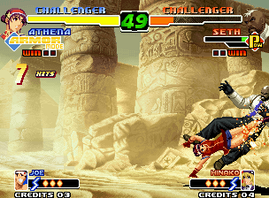

モード発動の発生1Fとアテナのアーマー連続技
K'のカウンターモード発動とアーマーモード発動は、どちらも発生1Fです。アテナはアーマーモードを発動すると、画面端の立っている相手に垂直JC→垂直JC→ADフェニックスアローで約8割のダメージを与えます。
モード発動の発生
| キャラ | カウンターモード発動 | アーマーモード発動 |
|---|---|---|
| K' | 1F | 1F |
2011年2月24日に「強いと言われるKOF2000のK'のフレームデータを調べてみよう」と予告し、翌日に結果が出ています。ほかのキャラの値は調べられていません。
モード発動はガード不能で、タクマの画面端のJB→アーマーモード発動（ガード不能）→6割以上という使い方が対戦動画に出てきます。
アテナのアーマーモード連続技
アーマーモード発動中、画面端の立っている相手に
垂直JC→垂直JC→ADフェニックスアロー：約8割

AB・ADで出すフェニックスアローは火力が上がりそうで、ADフェニックスアローをガードされていたらSTでフォローもできそう、という見通しを立てたうえでの確認です。カウンターモード中に同じ連続技が入るか、ガードされたときのSTのフォローは確かめられていません。
補足：2013年の「発生0F」の記憶
2013年11月4日には「KOF2000のカウンター＆アーマーモード発動は発生0Fのガード不能技だったはず（発生1Fだったかも）」と書かれています（X投稿）。思い出しながらの書き方なので、数値は2011年に調べた1Fを使います。
出典
- X投稿（2011/2/25）：K'のモード発動1F
- X投稿（2015/9/24）：アテナの見通し
- X投稿（2015/9/24、画像付き）：約8割
- X投稿（2015/9/24）：「少しいじれば即死にできそう」
気になること
- ほかのキャラのモード発動も1Fか。
- アテナの連続技は、カウンターモード中でも入るか。
- 「少しいじれば即死にできそう」（2015年）。即死になるレシピは残っていません。